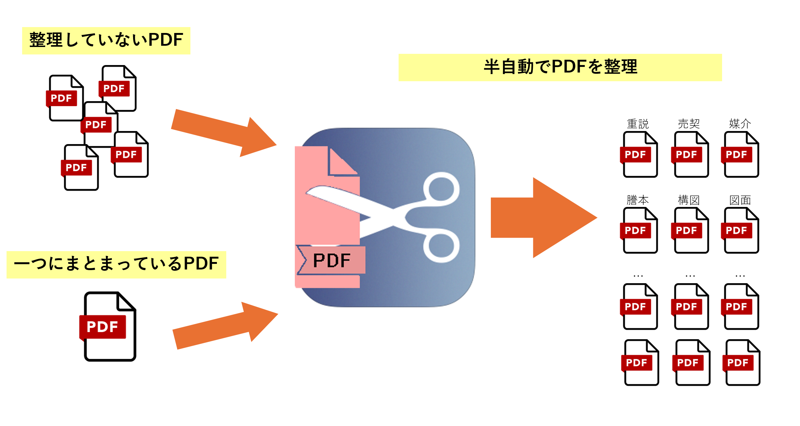
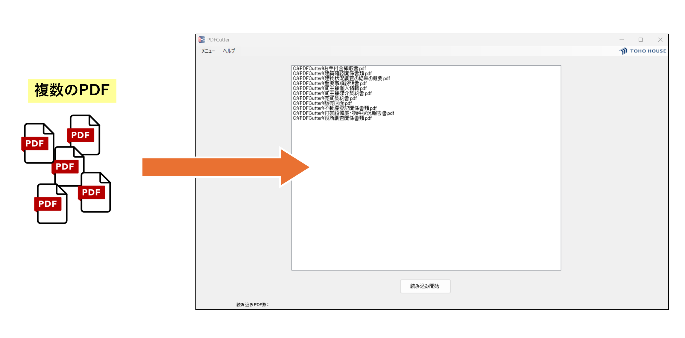
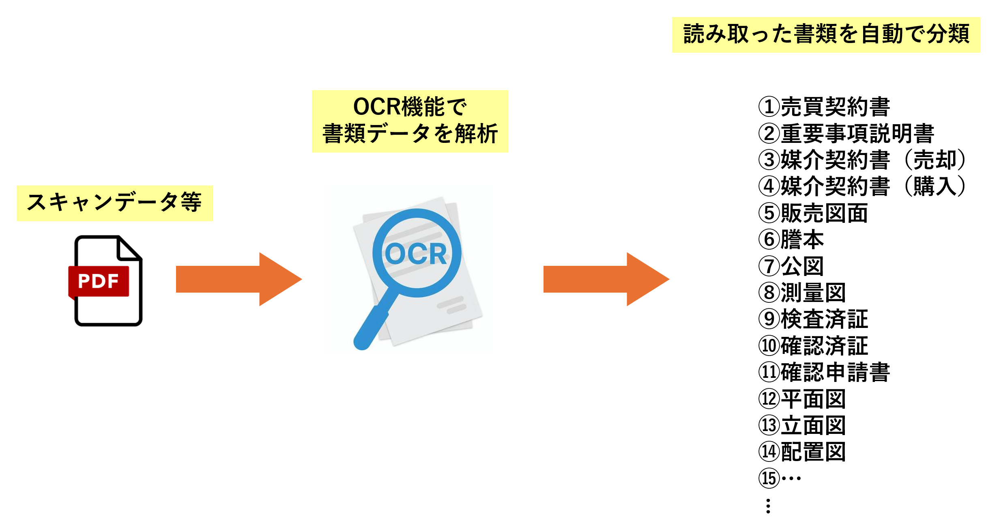
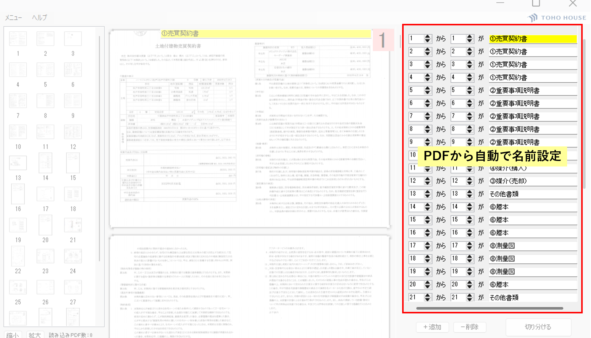
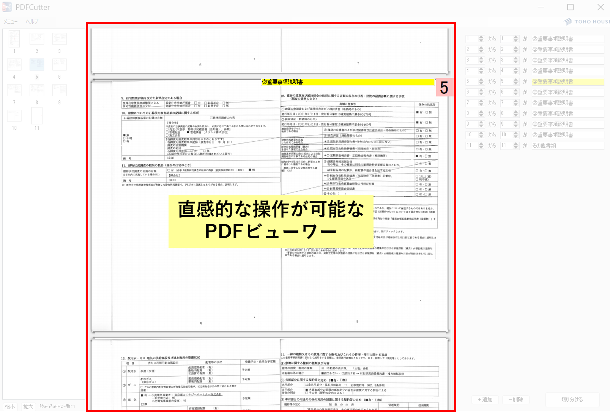

PDFCutter (一括くん)

導入効果
⚡ 作業スピード：数十ページのPDFも数クリックで仕分け完了
🤖 自動化：OCRによる書類判別で、手動リネームの手間をゼロに
📂 整理整頓：SS格納用書類のデジタル化を促進し、社内共有を効率化
開発の背景・概要
不動産売買における契約書類や重要事項説明書などは、一回のスキャンで膨大なページ数のPDFになりがちです。これらを一つずつ手作業で分割し、適切なファイル名を付けて保存する作業は、現場にとって大きな負担でした。
PDFCutter（通称：一括くん）は、AI（OCR）を活用してPDF内の文字を読み取り、書類の種類を自動で判別。最適なファイル名を付けて一括分割保存するシステムです。現場の事務作業を極限まで減らすために開発されました。
主な機能
複数PDFの一括統合・同時読み込み
バラバラのスキャンデータも、まとめてドラッグ＆ドロップするだけで一つに統合。そこから改めて全書類を仕分け直すといった高度な編集もワンストップで完了します。

OCRによる書類の自動判別
内蔵されたOCRエンジンがPDF内のテキストを解析。「売買契約書」「重要事項説明書」「謄本」「測量図」など、50種類以上の不動産関連書類を瞬時に判別します。

高精度な自動リネーム分割
判別された書類名に基づき、自動でファイル名を付与して分割保存します。同じ種類の書類が複数含まれている場合でも、ページ構成を読み取って適切に切り分けます。

直感的なサムネイルビューアー
読み込んだPDFは全ページがサムネイル表示され、内容を視覚的に素早く確認できます。表示倍率の変更や、特定のページへのジャンプもスムーズに行えます。
